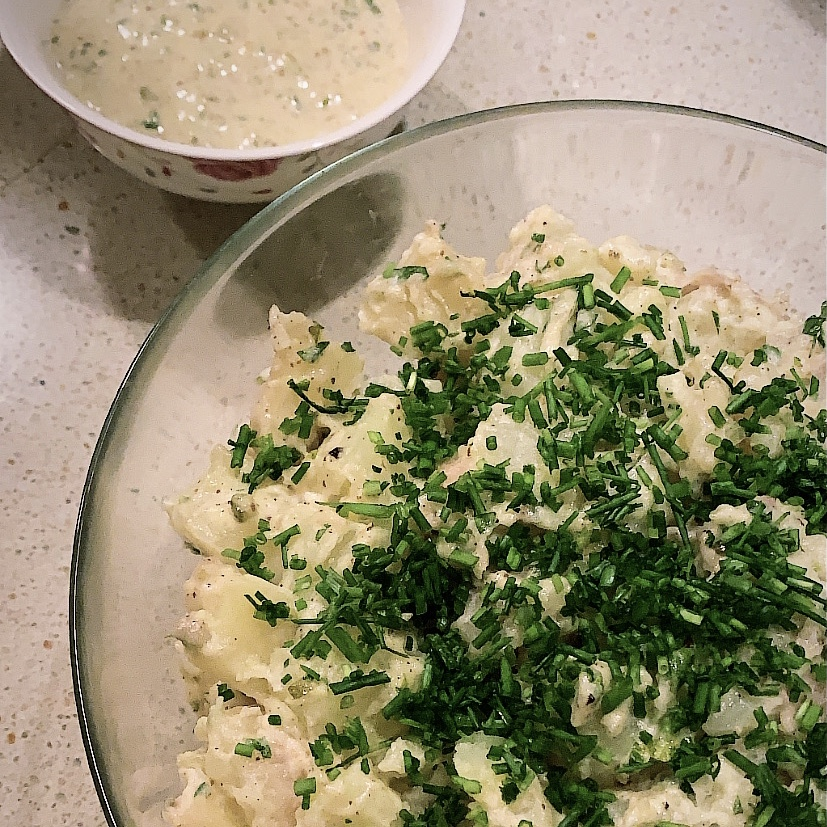

Potato Salad

Ingredients:
- 2 pounds medium red-skinned potatoes
- 1/2 cup mayonnaise
- 1/4 cup chopped parsley
- 2 tablespoons finely chopped pickles
- 2 tablespoons whole grain Dijon mustard
- 1 tablespoon white balsamic vinegar
- salt, black pepper (the usual stuff)
- chives on top for seasoning!
Inspired by/full recipe:
Bon Appetit